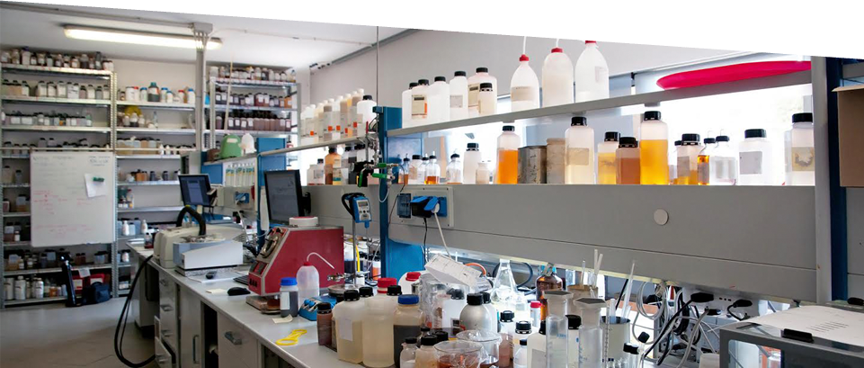
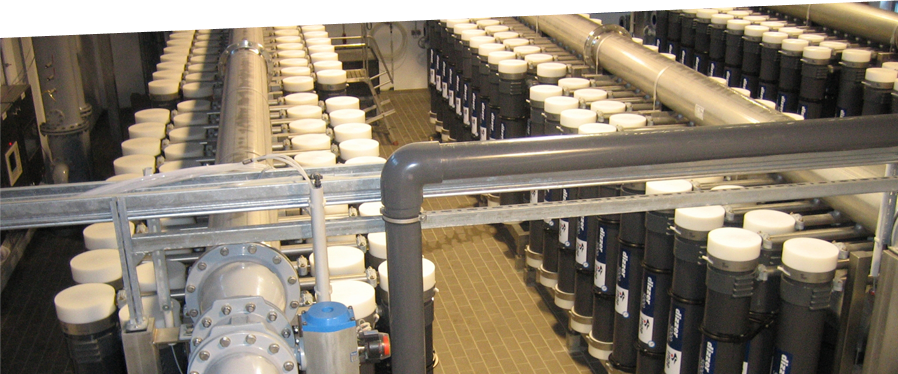
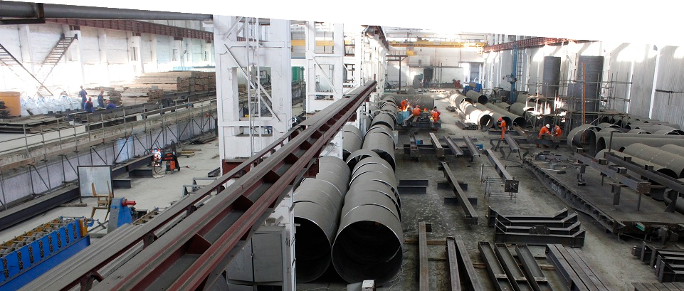
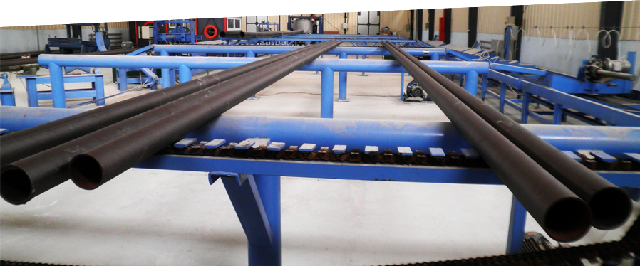
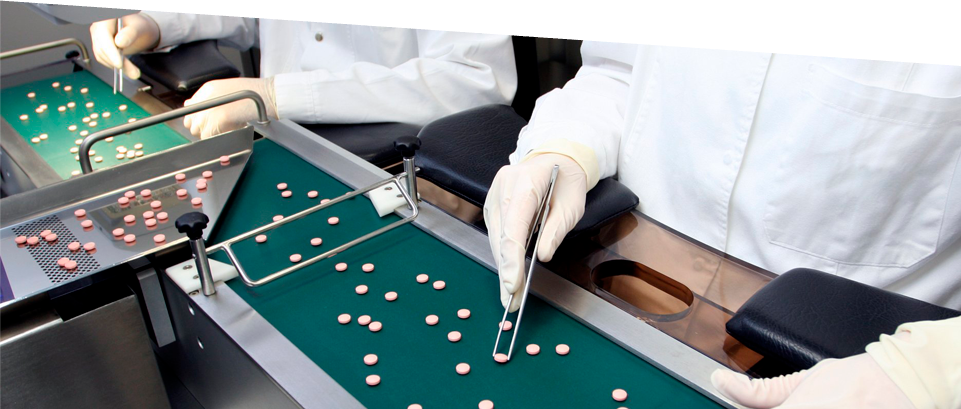
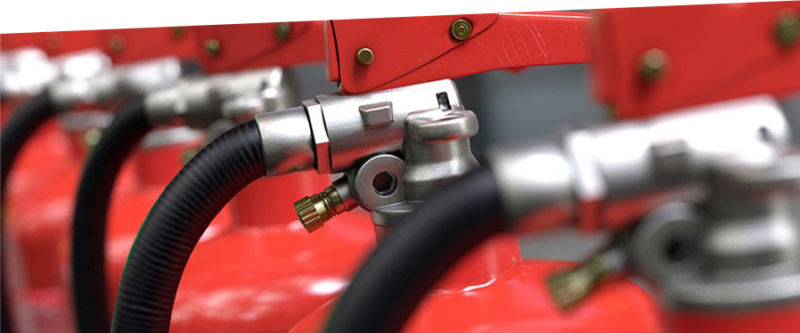

ТОО «CHEMICAL SOLUTIONS» – научно-производственная компания с локализацией основных мощностей в
г. Атырау и головным офисом в г. Алматы.
Деятельность «CHEMICAL SOLUTIONS» включает в себя:
Многолетний опыт и новейшие исследования в нефтегазовой и горнодобывающей отраслях способствуют поддержанию высокого качества разрабатываемой продукции. Компания реализует инвестиционный проект по увеличению производственной мощности с 2 000 до 25 000 тонн высокотехнологичной продукции в год.
ТОО «АЗОТНЫЙ ЗАВОД» был основан в 2007 году и является одним из ведущих предприятий химической промышленности Казахстана. Предприятие осуществляет свою деятельность по двум основным направлениям:
ТОО «АЗОТНЫЙ ЗАВОД» - один из крупнейших производителей криогенной продукции, имеющий сертификат о происхождении товара. Предприятие занесено в реестр отечественных товаропроизводителей ТОО «САМРУК КАЗЫНА КОНТРАКТ», а его технологический процесс построен в соответствии с системой менеджмента качества СТ РК ISO 9001-2009. На сегодняшний день ТОО «АЗОТНЫЙ ЗАВОД» - лидер рынка по осушке, испытанию и инертизации сосудов и трубопроводов для нефтегазовой отрасли среди компаний Республики Казахстан.
Завод металлоконструкций и технологического оборудования (ЗМТО) – ведущее предприятие в области производства металлоконструкций и металлообработки различной степени сложности, обладающее мощной производственной базой и современным оборудованием. ЗМТО проектирует и изготавливает:
На данный момент ЗМТО обладает 14 сварочными процедурами, сертифицированными в соответствии со стандартами ASME, ГОСТ и AWS. Также, предприятие применяет сертифицированные системы ISO 9001, 14001, OHSAS 18001. По завершению очередного этапа плана развития завода, в 2016 году его производительность была увеличена до 24 000 тонн изделий в год. В 2017 году запланирован ввод в эксплуатацию крупнейшего в регионе цеха горячего цинкования стальных конструкций.
ТОО «АКТАУ ПОЛИМЕР» - производственное предприятие, построенное по передовым технологиям и введенное в эксплуатацию в сентябре 2011 года. Проект реализован в рамках программы «Форсированного индустриально-инновационного развития Республики Казахстан». Завод специализируется на производстве:
ТОО «АКТАУ ПОЛИМЕР» является резидентом специальной экономической зоны «МОРПОРТ АКТАУ».
ТОО «WEIDER PHARM» было основано в 2005 году для продвижения инновационных фармацевтических препаратов, изделий медицинского и ветеринарного назначения на рынке Казахстана. Совместно с ведущими в мире компаниями «WEIDER PHARM»:
В ТОО «WEIDER PHARM» были внедрены системы менеджмента СТ РК ISO 9001-2009, системы экологического менеджмента СТ РК ISO 14001-2006 и система менеджмента профессиональной безопасности и здоровья СТ РК OHSAS 18001-2008.
ТОО «CHEMI LOGISTIС» реализует проект по производству газопорошковых систем пожаротушения. Данный проект позволит обеспечить практическое применение инновационной разработки модулей автоматического пожаротушения «BIZONE», которое сочетает в себе эффективность газовых и порошковых автоматических систем. Такой подход позволяет:
Место реализации проекта – Международный центр приграничного сотрудничества «ХОРГОС». Это главный опорный пункт Евроазиатского моста, который открывает новые возможности для расширения международной торговли. Фокус на экспорт и инновационность проекта обеспечит выход продукции на международные рынки.
